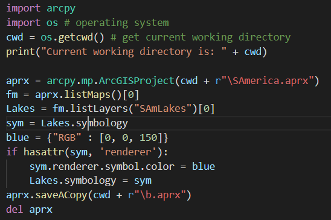
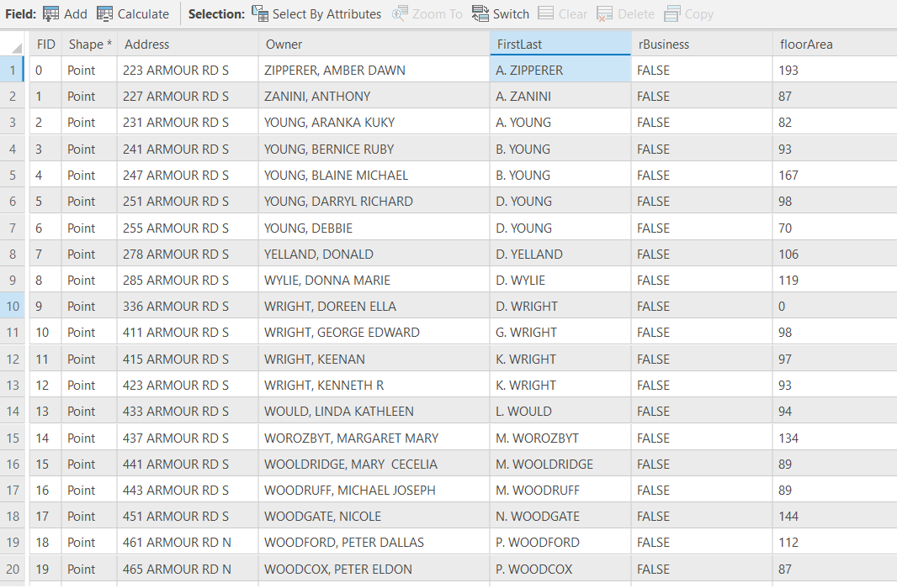
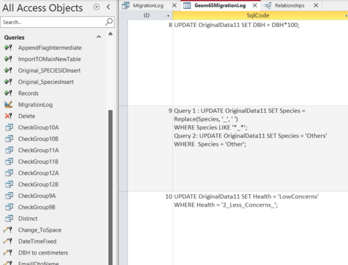

Drone Flight Survey Plan Python Code
The purpose of this application python code is to help fire emergency responders to organize their response for capturing fire images via drone flight operations. The user needs to input known information about the drone's specifications and the area they will be visualizing and can quickly receive data that will help them plan the optimal flight path. After using this application, results displayed will be aerial footprint size (± 1.1 cm), number of flight lines, total number of images and price of drone survey.
Cave Mapping Python Code
Here is an example of a python code file (of a problem which we were given during our academic coursework) that calculates the depth of the cave where some people are trapped. Their location inside the cave is to be found from the ground surface with the help of radiolocation method. The problem and method are explained in the pdf above. The code is designed to find the cave depth for multiple locations from the user on the ground surface and displays the output in the form of a list.
Python Programming with ArcGIS Pro
Here are 2 examples of the python script that are used to make particular edits in the existing ArcGIS Pro project file.
1. Change the symbology of a layer
The python script in the image below is for changing the symbology of a layer in the existing ArcGIS project file. This code changes the previously assigned dafault color of the layer named "SAmLakes" to blue colour to show the presence of a waterbody.
2. Editing the attribute data of a layer
The image below is the attribute table of a point layer having addresses and related information about the houses of an area in the city of Peterborough, Ontario. This attribute table have 1264 address records with the owners' name written as "Last-Name, First-Name". We have to change these names to "First Initial of First-Name. Last-Name" as shown in image below. To achieve this result, "String Manipulation" technique of Python programming is used in Calculate Field function of ArcGIS Pro to result.
Website Design Using HTML, CSS & JavaScript
This website published on GitHub is the team effort made to elaborate it as a dummy GIS consulting group website. CSS (Cascading Style Sheet) and JavaScript is used with HTML programming language to give customized and attractive appearance of the website.
SQL and Microsoft Access Database
Here attached is the microsoft access database which was the academic coursework. All classmates had to collect data about their neighboorhood trees by filling the Esri's Survey123 form where we had to put information about trees like their class (Coniferous or Deciduous), species from the given options, their health condition, percent deadwood, approximate height, crownspread, our location, altitute and extra comments. Then we were given a task of merging all these in one access database with the help of SQL (Structures Query Language) and deriving the relationships of different categories.
